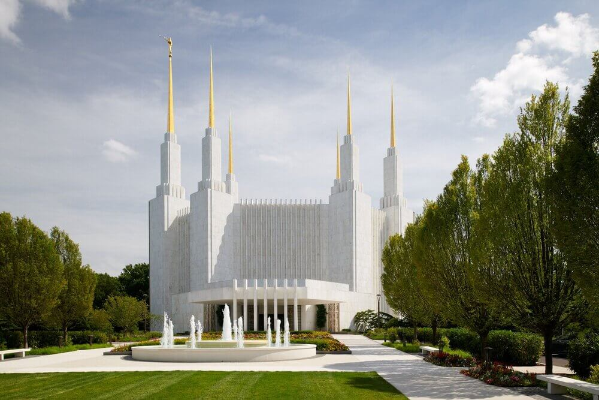

Join in the fun!
In July, we celebrate our ancestors on July 24th. This month we will be asking sisters to find some time to do family history. It can be indexing, or adding a memory or searching for family members that need their work done in the temple. We invite you to share what you have done on our ward Facebook page. We hope as you share what you have done, others will be inspired by your example.

August's activity will be a Relief Society sponsored trip to do an endowment session in the Washington DC Temple. Hopefully with the emphasis on family history in July, sisters will have their own family name to do the endowment for. Join us Friday, August 18th for the 10 am session. Remember you will need to make an appointment. We will meet at the temple. If you need babysitting, some of the young women have offered to babysit for free so you can attend. Contact the activities committee if you need babysitting, and if you need a ride.
In September we will be doing a service activity. More details will be coming.

In October we will be focusing on how to help our families remember the true meaning of Christmas. We will share ideas on how to prepare early so that the Christmas season is focused on Christ.

In November we will be focusing on gratitude by making gratitude journals. Bring a small notebook and we will provide materials to decorate it.

December will be a celebration of the birth of the Savior. Join us as we remember Jesus Christ and the blessings we receive because He was born.